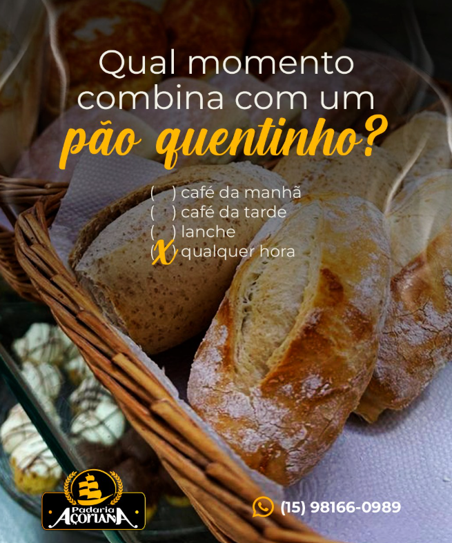

TRADIÇÃO EM PÃES ESPECIAIS & CONVENIÊNCIA SELECIONADA
O sabor autêntico do pão quentinho e a praticidade que o seu dia merece.
Descubra nossa linha artesanal de pães especiais de fermentação natural, confeitaria fina, salgados assados na hora e uma conveniência completa para você.
Fornadas quentes o dia todo
Pedidos via WhatsApp
Conveniência selecionada

FORNADA FRESCA SAINDO AGORA
100%